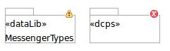

Validation checks can be performed on your modeling elements to help ensure that they are semantically correct and suitable to use as a basis for automatically generated code.
To validate the modeling elements shown in a diagram, select the menu item Edit -> Validate.
Where feasible, individual elements will be decorated with a small icon if there is an error or warning associated with that element. The following figure shows the yellow warning decoration on the left figure and the red error decoration on the right figure
. An error indicates that there is a semantic problem with the model that would result in code generation problems. A warning indicates a modeling construct may not be complete and in some cases could be ignored.
If you hover your mouse over an error or warning icon a pop-up will show the validation failures for that element.
Validation failures can also be seen in the Problems view as shown in the figure below. To bring up the Problems view select menu item Window -> Show View -> Problems

By default, the scope of the validation messages that are shown in the Problems view include all files in your workspace. If you have multiple models with validation messages it may be difficult to find messages specific to the opened diagram.
You can configure the Problem view to limit the scope of messages shown. This is done by selecting Show from the view menu for the Problem view and indicating the scope of the messages.